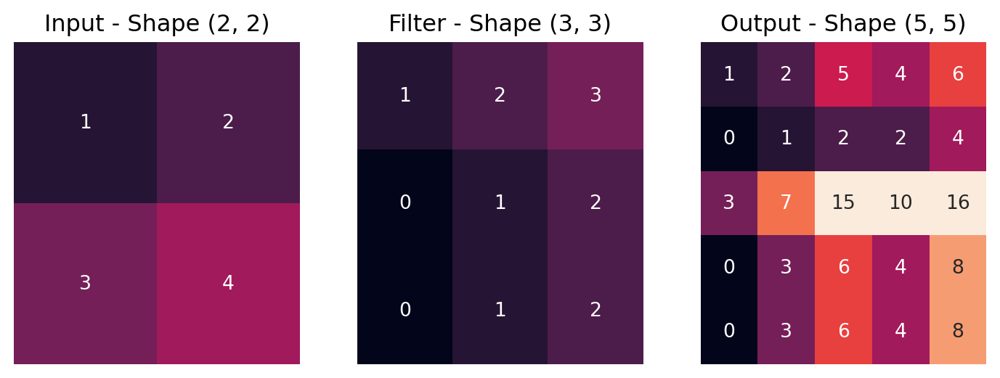
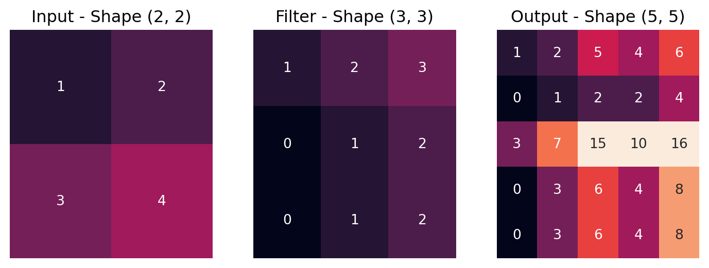

/tmp/ipykernel_4148/1337272222.py:33: DeprecationWarning:
__array__ implementation doesn't accept a copy keyword, so passing copy=False failed. __array__ must implement 'dtype' and 'copy' keyword arguments.

In image segmentation, individual pixels in the input image are assigned to a known set of classes (semantic segmentation) or objects (instance segmentation). Figure 1 illustrates the differences between image classification, object detection, and segmentation.
Semantic segmentation can be viewed as a classification problem where each pixel is individually classified. Thus, semantic segmentation is similar to image classification but more complex. Figure 2 shows an example from a dataset with segmented street scenes, for training models for self-driving cars.
Figure 3 shows a medical example where a model was trained to segment chest X-rays.
Instance segmentation is comparable to object detection but more complex because entire pixel masks must be predicted, defining the spatial extent of individual objects. Figure 4 shows an example.
We will now look at methods for semantic segmentation and instance segmentation.
One method for semantic segmentation is to classify each pixel by classifying the pixel in the center using a sliding window approach. The sliding window would provide context information, allowing more accurate classification. Figure 5 illustrates the process.
However, this approach is very inefficient as a forward pass through the CNN would have to be performed for each pixel, and features extracted from overlapping sliding windows would not be reused.
Shelhamer, Long, and Darrell (2016) proposed one of the first fully convolutional networks (FCNs). An FCN consists solely of convolutional layers (specifically, it has no fully connected/linear layers) and can thus process images of any spatial dimension and produce a segmentation map of the same dimension. By replacing fully connected/linear layers with convolutional layers, the dependency on a fixed input size can be eliminated.
Figure 6 illustrates an FCN. The FCN has an output of dimension \(H \times W \times K\) (height, width, depth), where \(K\) is the number of classes. The class-specific activation maps model the probability that a pixel belongs to the corresponding class. With the argmax function, each pixel could then be assigned to the class with the highest probability.
The problem with this approach is that it requires a lot of compute (FLOPs) because the spatial dimensions of the deeper layers still correspond to the input dimension. Therefore, many operations must be performed as the filters must be convolved over a larger area.
The first layers in a CNN learn local structures (as the receptive field is very small, they cannot learn anything else), which are successively aggregated in further layers. The number of channels is typically increased to allow the CNN to recognize different variations of patterns, increasing the model’s memory requirements. Additionally, sufficient layers are needed to ensure the receptive field (see ?@sec-cnn-receptive-field) is large enough for accurate segmentation.
In image classification, the global label of the image is modeled. Thus, this problem does not exist in image classification, as the spatial dimension of the activation maps can be gradually reduced, keeping the compute approximately constant across the network.
Shelhamer, Long, and Darrell (2016) solved the problem by gradually down-sampling the activation maps using convolutions with stride >2 or pooling layers (just like in image classification architectures) but then up-sampling the activation maps from various layers using an up-sampling method (see Section 3). They concatenate information from various layers to obtain activation maps containing rich features with local and global context. These are then reduced to the desired number of classes with \(1 \times 1\) convolutions as needed. See Figure 7 for an illustration.
By using skip connections, which directly connect activation maps in the middle of the architecture with deeper layers, the segmentation map results were significantly improved. Figure 8 shows examples.
With the encoder-decoder architecture, the input (the image) is gradually reduced spatially (encoded) until a dense representation (encoding) is obtained. This encoding is then gradually expanded spatially with a decoder until the original dimension is reached. Figure 9 illustrates the process. This architecture is very compute-efficient and, due to the symmetry of the encoder and decoder, produces segmentation maps that correspond to the input resolution.
An extreme compression (encoding) was applied, for example, by Noh, Hong, and Han (2015), see Figure 10. This makes the model significantly more efficient as the activation maps are relatively small.
In encoder-decoder architectures, the encoding of the input must be decoded so that the input’s spatial dimension is reached again. Therefore, the network needs components that can upscale activation maps spatially (upsampling). There are several ways to do this.
The variants Bed of Nails and Nearest Neighbour are shown in Figure 11. Here, the inputs are simply copied and duplicated along the height/width or filled with zeros.
Another variant of upsampling, especially suitable for symmetric architectures such as encoder/decoder architectures, is to link max-pooling layers (in the encoder) with unpooling layers (in the decoder). In particular, one can remember where the maximum value appeared in the max-pooling layers. When unpooling, the corresponding value can be set to the same position instead of always at position \((0,0)\) as in Bed of Nails. This prevents the exact positions of the activations from being lost, which is important for pixel-accurate segmentation. To achieve this, one must save where the maximum value appeared during model training (and inference) in a switch variable. See Figure 12 and Figure 13 for an illustration.
Another method is interpolation. One can enlarge an input, as in image processing, with interpolation. Figure 14 illustrates an example using bilinear interpolation.
These upsampling methods all have in common that they are not learned and therefore have no parameters that could be optimized with gradient descent. A learnable variant of upsampling is transposed convolutions. Transposed convolutions (also fractionally strided convolutions or deconvolutions) achieve this effect. This operation does not define an inverse of the convolution.
Figure 15 illustrates a transposed convolution with stride 2, kernel 2, and an input with a side length of 2. The individual results at each input position and the added result are shown.
Figure 16 illustrates a transposed convolution with stride 2, kernel 3, and an input with a side length of 2. It shows that there are overlaps in the output, which are added.
Figure 17 shows an example where a transposed convolution is visualized as a convolution. A \(3x3\) kernel is convolved over a \(2x2\) input extended with \(2x2\) padding. More complex transposed convolutions, e.g., with stride >1, can also be represented with convolutions if the input is adjusted accordingly.
The name transposed convolution comes from expressing a convolution with matrix multiplication and the transposed convolution with the corresponding transposed matrix. Figure 18 shows an example.
If you use transposed convolutions with PyTorch, you should read the documentation: torch.nn.ConvTranspose2d. There are formulas to accurately calculate the desired output dimension based on the parameterization.
The following code shows an example in PyTorch.
/tmp/ipykernel_4148/1337272222.py:33: DeprecationWarning:
__array__ implementation doesn't accept a copy keyword, so passing copy=False failed. __array__ must implement 'dtype' and 'copy' keyword arguments.

A well-known architecture is U-Net Ronneberger, Fischer, and Brox (2015). It has been successfully used to segment images in medicine/biology. U-Net inspired architectures are also used in numerous other applications (e.g., image generation Rombach et al. (2022)). Figure 19 shows examples of such segmentation.
The unique aspect of U-Net is that it uses an encoder/decoder architecture while simultaneously employing shortcut/skip connections to connect various layers directly. Figure 20 shows the U-Net architecture (U-shaped, hence the name), including the copy and crop operations that connect the layers. These connections directly copy detailed low-level information to the output without passing through the bottleneck in the encoder, where there may not be enough capacity to preserve it. The bottleneck encodes global information relevant to all positions, making the segmentation more accurate in detail.
Additionally, when training the models, the individual pixels were weighted differently. The closer a pixel is to the edge of an object, the higher its loss was weighted. This allows U-Net to learn especially sharp separations between objects, which can be important in medicine when, for example, segmenting cells that are very close to each other.
Since semantic segmentation essentially performs classification at the pixel level, the same loss function used in image classification can be applied at the pixel level. Figure 21 shows that the softmax function is applied individually to all pixel positions to obtain probability distributions per pixel.
Often, per-pixel cross-entropy is used as the loss function, where \(N\) refers to the total number of pixels:
\[\begin{align} CE = - \sum_{i=1}^N \sum_{j=1}^K y_j^{(i)} \log \hat{y}_j^{(i)} \end{align}\]
In instance segmentation, the goal is to detect and segment all objects in an image. The approach is simple: perform object detection and then model a segmentation mask in addition to the bounding box.
One of the most well-known models is an extension of Faster R-CNN: Mask R-CNN. Figure 22 illustrates the additional output head responsible for mask prediction.
Mask R-CNN models the masks with an output size of \(NxNxK\), where \(NxN\) is the spatial dimension of the RoI pooling of the individual objects. \(K\) is the number of classes. Masks are always generated for all classes. When training the models, the mask of the ground truth class \(k\) is evaluated, and the binary pixel-wise cross-entropy loss is calculated accordingly.
\[\begin{align} \text{binary CE} = - \sum_{i=1}^{N^2} \Big( (\log \hat{y}_k^{(i)})^{y_k^{(i)}} + (\log (1-\hat{y}_k^{(i)}))^{(1 - y_k^{(i)})} \Big) \end{align}\]
Mask R-CNN also uses an improved version of RoI pooling, called RoI align, to more precisely align the masks with the object in the input (since the spatial resolution of the RoI is much smaller than the input object).
Figure 24 shows examples of training data. Note that the ground truth masks are each cropped relative to the predicted bounding box.
Mask R-CNN works remarkably well, as results from He et al. (2018) show, see Figure 25.
In panoptic segmentation, the goal is to fully segment an image by combining semantic segmentation and instance segmentation. The distinction is made between things (objects) and stuff (the rest, like the background, etc.). Figure 26 shows an example.
The output of such a model can be seen in Figure 27.
Pixel accuracy is the ratio of correctly classified pixels to the total number of pixels. For \(K + 1\) classes (including the background class),
pixel accuracy is defined as:
\[\begin{equation} \text{PA} = \frac{\sum_{i=0}^Kp_{ii}}{\sum_{i=0}^K\sum_{j=0}^K p_{ij}} \end{equation}\]
where \(p_{ij}\) is the number of pixels of class \(i\) predicted as class \(j\).
Mean pixel accuracy is an extension of pixel accuracy. The ratio of correct pixels to all pixels is calculated for each class and then averaged over the number of classes.
\[\begin{equation} \text{MPA} = \frac{1}{K+1} \sum_{i=0}^K \frac{p_{ii}}{\sum_{j=0}^K p_{ij}} \end{equation}\]
This metric is often used in semantic segmentation. It is the area of the intersection of the prediction and ground truth, divided by the union of the prediction and ground truth.
\[\begin{equation} \text{IoU} = \frac{\lvert A \cap B \rvert}{\lvert A \cup B \rvert} \end{equation}\]
M-IoU is the average IoU over all classes.
Precision is the proportion of samples classified as positive that are actually positive:
\(\text{Precision} = \frac{TP}{TP + FP}\)
Recall is the proportion of positive samples that are correctly identified:
\(\text{Recall} = \frac{TP}{TP + FN}\)
F1 is the harmonic mean of precision and recall:
\(\text{F1} = \frac{2 \text{Precision Recall}}{\text{Precision} + \text{Recall}}\)
The Dice coefficient is twice the intersection of the prediction and ground truth, divided by the total number of pixels. The Dice coefficient is thus similar to the IoU.
\[\begin{equation} \text{Dice} = \frac{2 \lvert A \cap B \rvert}{\lvert A \rvert + \lvert B \rvert} \end{equation}\]
There are several ways to apply segmentation in PyTorch. It is advisable to use a segmentation/object detection framework.
An example is Detectron2. There are pre-trained models that can be used directly or adapted to your dataset.
Segmentation can also be performed with torchvision.